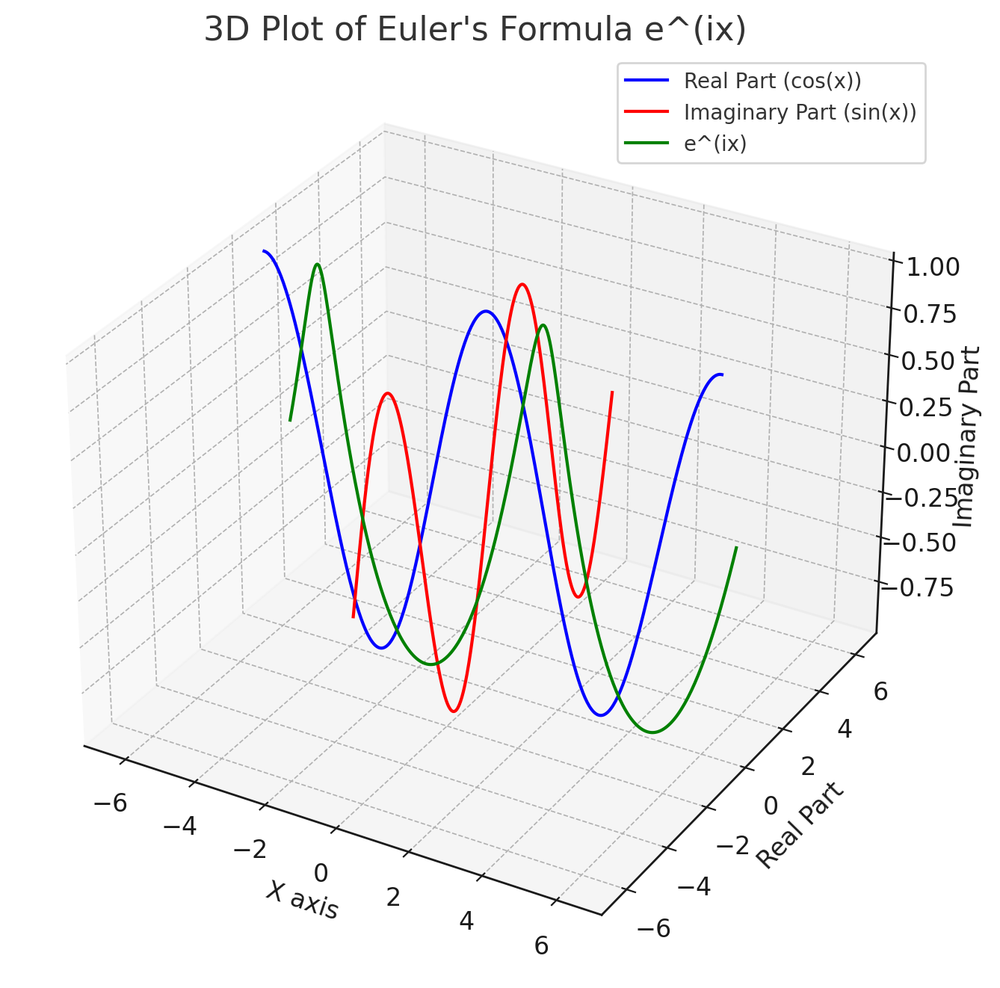

Introduction#
This is a demo “DRM” brand Jupyter Book.
{kind=link}
Fig. 1 DRM. All rights reserved © 2024.#
For this demo, I will discuss a topic of interest to me: Euler’s Formula.
Euler’s Formula#
Euler’s formula, a fundamental equation in complex analysis and engineering, states that for any real number \(x\):
Where:
\(e\) is the base of the natural logarithm,
\(i\) is the imaginary unit (satisfying \(i^2 = -1\)),
\(\cos\) and \(\sin\) are the trigonometric functions cosine and sine respectively.
Note
Did you know that Euler’s formula was named after Leonhard Euler, a Swiss mathematician? Euler derived the exponential function equation by comparing the series expansion of the exponential and trigonometric expresssions, and first published this formula in 1748, in his Introductio in analysin infinitorum (Introduction to the Analysis of the Infinite) work.
Derivation of Euler’s Formula:#
Euler’s formula can be derived from the Taylor series expansions of \(e^x\), \(\cos(x)\), and \(\sin(x)\).
Taylor Series Expansion:
The Taylor series for \(e^x\), \(\cos(x)\), and \(\sin(x)\) around 0 are:
Substitute \(x\) in the Taylor Series of \(e^x\):
When you substitute \(ix\) into the series for \(e^x\), you get:
Simplify the Expansion:
Simplifying this expression using \(i^2 = -1\), \(i^3 = -i\), \(i^4 = 1\), and so on, gives:
Separate Real and Imaginary Parts:
Grouping real and imaginary parts separately:
Recognize the Series for Cosine and Sine:
You’ll notice that the series in parentheses are the Taylor series for \(\cos(x)\) and \(\sin(x)\), respectively. Therefore:
\[e^{ix} = \cos(x) + i\sin(x)\]
This formula shows a deep relationship between trigonometry and exponential functions and is the basis for many applications in engineering, physics, and mathematics.
Visualizing Euler’s Formula#
We can use python to visualize how the Euler Formula changes, by varying the independent variable \(x\).
import numpy as np
import matplotlib.pyplot as plt
from mpl_toolkits.mplot3d import Axes3D
# Generate values for x
x = np.linspace(-2*np.pi, 2*np.pi, 400)
# Calculate the real and imaginary parts of e^(ix)
re = np.cos(x) # Real part
im = np.sin(x) # Imaginary part
# Plotting
fig = plt.figure(figsize=(10, 8))
ax = fig.add_subplot(111, projection='3d')
# Plotting real and imaginary parts
ax.plot(x, re, zs=0, zdir='y', label='Real Part (cos(x))', color='blue')
ax.plot(x, im, zs=0, zdir='x', label='Imaginary Part (sin(x))', color='red')
# Plotting the complex function e^(ix)
ax.plot(x, re, im, label='e^(ix)', color='green')
# Labels and title
ax.set_xlabel('X axis')
ax.set_ylabel('Real Part')
ax.set_zlabel('Imaginary Part')
ax.set_title('3D Plot of Euler\'s Formula e^(ix)')
# Legend
ax.legend()
plt.show()
The resulting plot visually represents how Euler’s formula \(e^{ix}\) changes as the value of the independent variable \(x\) varies.
The blue line represents the real part of \(e^{ix}\), which is \(cos(x)\).
The red line represents the imaginary part of \(e^{ix}\), which is \(sin(x)\).
The green curve shows the combined complex function \(e^{ix}\) as a function of \(x\), combining both the real and imaginary parts.
As we see in euler_formula_matplotlib.png, as \(x\) changes, you can see the cyclical nature of both the cosine and sine functions, reflecting the periodic behavior of Euler’s formula on the complex plane.

{kind=link}
Fig. 2 Visualizing Euler’s formula with Matplotlib.#
Interactive visualization of Euler’s Formula#
We can use a slider, in python plots, to visualize how Euler’s formula changes as the value of x is varied.
import numpy as np
import matplotlib.pyplot as plt
from matplotlib.widgets import Slider
# Define the Euler's formula
def euler_formula(x):
return np.exp(1j * x)
# Initial value of x
x_initial = 0
# Create the figure and the line that we will manipulate
fig, ax = plt.subplots()
plt.subplots_adjust(bottom=0.25)
t = np.linspace(-2*np.pi, 2*np.pi, 1000)
real, = ax.plot(t, np.real(euler_formula(t)), label='Real Part')
imag, = ax.plot(t, np.imag(euler_formula(t)), label='Imaginary Part')
combined, = ax.plot(t, np.abs(euler_formula(t)), label='Magnitude', linestyle='--')
# Adjust the main plot to make room for the slider
ax.set_ylim(-1.5, 1.5)
ax.legend()
# Add a slider for changing the value of x
axcolor = 'lightgoldenrodyellow'
ax_slider = plt.axes([0.1, 0.05, 0.65, 0.03], facecolor=axcolor)
slider = Slider(ax=ax_slider, label='x', valmin=-2*np.pi, valmax=2*np.pi, valinit=x_initial)
# The function to be called anytime a slider's value changes
def update(val):
x = slider.val
real.set_ydata(np.real(euler_formula(t)))
imag.set_ydata(np.imag(euler_formula(t)))
combined.set_ydata(np.abs(euler_formula(t)))
fig.canvas.draw_idle()
# Register the update function with each slider
slider.on_changed(update)
# Show the plot
plt.show()
The blue line represents the real part of \(e^{ix}\), which corresponds to \(cos(x)\).
The orange line represents the imaginary part of \(e^{ix}\), corresponding to \(sin(x)\).
The green dashed line represents the magnitude of \(e^{ix}\), which is always 1.
One can adjust the slider to change the value of \(x\) and observe how the real and imaginary parts, as well as the magnitude of Euler’s formula, change accordingly. The slider allows you to explore values of \(x\) in the range of \(−2π \text{ - } 2π\).